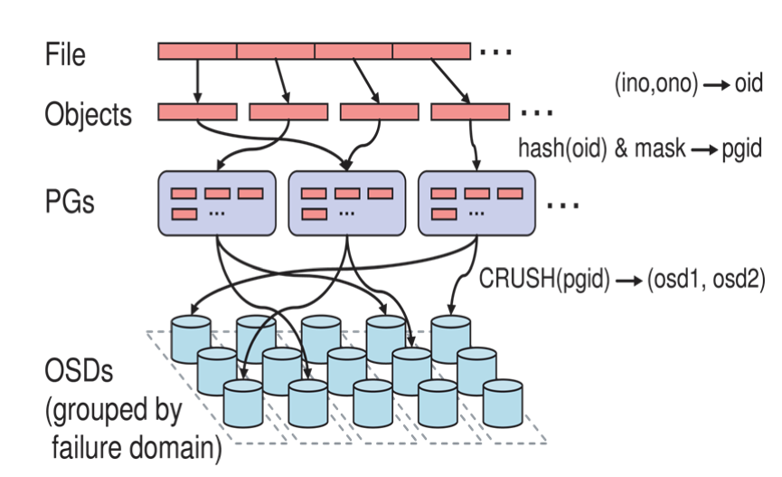

本文主要介绍Ceph存储集群的部署方式，以及三种存储类型服务的构建及简单使用，不对内部原理做深入介绍，过后会编写另外的文章聊这个话题。本文属于个人学习笔记，如有错误欢迎指正，部署期间踩到的坑写在了Q&A。
组件介绍
一个Ceph存储群集至少需要一个监控器(ceph-mon)，管理器(ceph-mgr)和对象存储守护程序(ceph-osd)。运行Ceph文件系统客户端时，还需要元数据服务器(ceph-mds)。
- 管理器(ceph-mon): 维护集群状态的映射，包括监视器映射，管理器映射，OSD映射，MDS映射和CRUSH映射。这些映射是Ceph守护程序相互协调所需的关键群集状态。监视器还负责管理守护程序和客户端之间的身份验证。通常至少需要三个监视器才能实现冗余和高可用性。
- 管理器(ceph-mgr): 负责跟踪运行时指标和Ceph集群的当前状态，包括存储利用率，当前性能指标和系统负载。Ceph Manager守护程序基于python模块进行管理并且负责公开Ceph集群信息（包括基于Web的Ceph Dashboard和 REST API）。通常，至少需要两个管理器才能实现高可用性。
- 对象存储守护程序(ceph-osd): 处理数据复制，恢复，重新平衡，并通过检查其他Ceph OSD守护程序的心跳来向Ceph监视器和管理器提供一些监视信息。通常至少需要3个Ceph OSD才能实现冗余和高可用性。
- 元数据服务器(ceph-mds): 代表Ceph文件系统存储元数据（即Ceph块设备和Ceph对象存储不使用MDS）。Ceph的元数据服务器允许POSIX文件系统的用户来执行基本的命令（如 ls，find等等）。
Ceph将数据作为对象存储在逻辑存储池中。Ceph 使用 CRUSH算法计算一个对象应该包含在哪个Placement group，并进一步计算这个Placement group应存储在哪个Ceph OSD守护程序。CRUSH算法使Ceph存储集群能够动态扩展，重新平衡和恢复。下面是Ceph文件对象存储流程图：

预安装
添加密钥
APT
1 | wget -q -O- 'https://download.ceph.com/keys/release.asc' | sudo apt-key add - |
RPM
1 | sudo rpm --import 'https://download.ceph.com/keys/release.asc' |
添加Ceph源
Ubuntu或Debian
1 | sudo apt-add-repository 'deb https://download.ceph.com/debian-{ceph-release}/ $(lsb_release -sc) main' |
RHEL或CentOS
1 | # 加入Ceph yum源文件 |
时间同步
需要确保Ceph集群中所有节点的时间同步，使用 ntp 工具做时间同步。
CentOS / RHEL:
1 | sudo yum install ntp ntpdate ntp-doc |
Debian / Ubuntu:
1 | sudo apt install ntpsec |
或:
1 | sudo apt install chrony |
安装SSH服务
Ceph集群部署是在总控机器上通过SSH连接其它集群节点进行安装，所以需要保证所有Ceph集群节点都开启了SSH服务。
CentOS / RHEL:
1 | sudo yum install openssh-server |
Debian / Ubuntu:
1 | sudo apt install openssh-server |
创建Ceph部署用户
为了安全起见不建议使用root用户进行部署，创建一个Ceph部署专用的用户更为合理，而且需要保证部署机可通过“SSH免密登录”的方式使用Ceph部署用户登录到集群中的各个节点。
创建用户:
1 | ssh user@ceph-server |
需要保证Ceph部署用户是一个 sudoer:
1 | echo "{username} ALL = (root) NOPASSWD:ALL" | sudo tee /etc/sudoers.d/{username} |
免密登录
在主节点上执行下列指令实现免密登录：
1 | $ ssh-copy-id ceph@{host} |
安装ceph-deploy
Ubuntu或Debian
1 | $ apt-get install ceph-deploy |
RHEL或CentOS
1 | $ yum install ceph-deploy |
部署Ceph集群
官方提供了三种部署Ceph集群的方法，分别是：ceph-deploy, cephadm, 手动安装。这里只介绍最大众化的安装方式： ceph-deploy。
演示案例采用3节点集群部署，主机名与IP映射如下：
- node1: 192.168.56.101
- node2: 192.168.56.102
- node3: 192.168.56.103
以 node1 作为部署主节点，如没有特殊说明下面给出的指令都运行在node1节点上。
部署 ceph-mon
- 创建 Ceph 配置文件:
1
2
3
4
5# 计划三个节点都部署ceph-mon服务，格式: ceph-deploy new {initial-monitor-node(s)}
$ ceph-deploy new node1 node2 node3
# 创建成功后会在当前目录生成这三个文件，其中ceph.conf是集群配置文件，ceph.mon.keyring是ceph-mon服务的密钥
$ ls
ceph.conf ceph-deploy-ceph.log ceph.mon.keyring
一个Ceph集群中至少拥有一个ceph-mon，为了实现高可用，Ceph集群可以部署多个ceph-mon服务，当集群中某一个ceph-mon服务挂掉后也不会影响整个集群使用。Ceph使用Paxos算法，该算法需要大多数ceph-mon（即，大于N / 2，其中N是ceph-mon的数量）才能形成仲裁。监视器的奇数往往会更好，尽管这不是必需的。
这里只是配置初始的ceph-mon节点主机，可以在后续集群正常使用过程中添加新的ceph-mon。
1 | # 后续添加ceph-mon的指令格式: ceph-deploy mon add {ceph-nodes} |
一旦添加了新的Ceph监视器，Ceph将开始同步监视器并形成仲裁。您可以通过执行以下操作检查仲裁状态：
1 | $ ceph quorum_status --format json-pretty |
如果你的集群节点存在多个网卡，需要为ceph.conf文件添加Ceph集群通信网段的配置。演示网络是192.168.56.0/24网段，所以添加配置如下：
1
2# public network = {ip-address}/{bits}
public network = 192.168.56.0/24如果采用了IPv6，还需要在ceph.conf中添加如下配置:
1
ms bind ipv6 = true
为每个节点安装 Ceph 依赖库。
1
$ ceph-deploy install --no-adjust-repos node1 node2 node3
这个指令会通过SSH远程到 node1,node2,node3 三个节点分别执行 yum install 或 apt install 安装，因为前面预处理章节已经配置了ceph的yum源或apt源，--no-adjust-repos 参数表明不修改节点的yum源或apt源，直接执行 yum install 或 apt install 指令下载需要的依赖库，不添加此参数的话可能会造成下载的库版本与我们预期的不一致问题。
- 初始化ceph-mon并创建组件密钥。
1
$ ceph-deploy mon create-initial
一旦指令执行成功，在当前目录下将会新增一些keyring文件：
- ceph.client.admin.keyring
- ceph.bootstrap-mgr.keyring
- ceph.bootstrap-osd.keyring
- ceph.bootstrap-mds.keyring
- ceph.bootstrap-rgw.keyring
- ceph.bootstrap-rbd.keyring
- ceph.bootstrap-rbd-mirror.keyring
- 使用
ceph-deploy复制配置文件以及admin用户的密钥到Ceph集群的其它节点，这样做其它节点也可以通过命令行对Ceph进行操作。1
2
3
4# 可以指定多个节点拥有ceph集群的管理权限，格式：ceph-deploy admin {ceph-node(s)}
$ ceph-deploy admin node1
# 确保当前用户拥有ceph.client.admin.keyring文件的读权限
$ sudo chown {user}:{group} /etc/ceph/ceph.client.admin.keyring
指令执行完毕后，在指定节点的 /etc/ceph 目录下会新增 ceph.client.admin.keyring 密钥文件，ceph集群管理命令需要通过这个密钥认证才能执行。
node1上执行ceph命令，确认admin密钥正确:
1 | [ceph@node1 ~]$ ceph -s |
在没有赋予管理权限的节点上尝试执行Ceph管理指令将会报错：
1 | # 在 node2或node3 上执行 |
部署 ceph-mgr
在 luminous 或更新的版本需要这一步。
1 | $ ceph-deploy mgr create node1 |
添加OSD
OSD是Ceph集群的基础存储单元，需要指定一个裸盘、主分区或逻辑分区作为一个OSD服务。
笔者当前演示的环境是用3台虚拟机并各创建一个虚拟裸盘实现，3个节点均挂载这个虚拟磁盘在/dev/sdb上，大小为30G。
1 | $ lsblk |
使用ceph-deploy添加OSD指令如下：
1 | # 格式: ceph-deploy osd create --data {device} {ceph-node} |
这里可能因Ceph版本不同细节有些许区别，若不幸遇到报错需要根据日志自己解决。
1 | # 部署完毕后再次查看集群状态可以看到3个OSD已经启动 |
删除OSD
1 | # 从crush中移除节点 |
添加MDS
ceph-mds是CephFS必要的服务，如果可以采用部署Orchestrator自动为您的文件系统创建并配置MDS（请参阅 Orchestrator部署表）。否则，参照下列方法手动部署mds。
想要启动CephFS前必须启动ceph-mds服务，执行下列脚本可部署mds服务（需要先配置环境变量）：
1 | # 创建mds存储目录。 |
至此Ceph集群基础组件部署完毕，可以根据需要往下部署不同存储类型的服务。
三种Ceph存储类型的部署
CephFS致力于为各种应用程序提供最新，多用途，高可用性和高性能的文件存储。提供了三种存储类型：
- CephFS
- Ceph Object Storage
- CephRBD
避免篇幅过长，本文只介绍最简单的部署及使用方式，过后会有其它文章详述各种存储类型的运行机制。
CephFS
服务端部署
CephFS 是 Ceph File System 的简称，它是在Ceph的分布式对象存储RADOS之上构建的POSIX兼容文件系统。
文件元数据与文件数据存储在单独的RADOS池中，并通过可调整大小的元数据服务器或MDS集群提供服务，该集群是可拓展的以支持高吞吐量的元数据工作负载。
文件系统的客户端可以直接访问RADOS以读取和写入文件数据块，因此，工作负载可能会随着基础RADOS对象存储的数量线性扩展，也就是说，没有网关或代理为客户端中介数据I / O。
通过MDS集群协调对数据的访问，每个MDS都会将对元数据的变化汇总到日志以对RADOS进行一系列有效写入。MDS不会在本地存储任何元数据状态。此模型允许在POSIX文件系统的上下文中客户端之间进行连贯且快速的协作。

创建cephfs可以直接使用如下指令:
1 | # 创建名为 testfs 的文件系统资源 |
该指令将自动创建一个元数据存储池（cephfs.<FSNAME>.meta）与一个内容存储池（cephfs.<FSNAME>.data）。
若不幸出现了警告内容为too few PGs per OSD (n < min 30)，请参考Q&A章节获知解决方案。
客户端挂载
CephFS挂载有两种方法：使用Linux内核驱动或是使用ceph-fuse工具。实际上比较常用的是ceph-fuse工具方法，所以本文只介绍这种挂载方式。
需要先安装 ceph-fuse
1
$ yum install -y ceph-fuse
在客户机生成服务端路径相关配置文件。
1
2
3
4
5
6
7
8
9
10# 在客户机上执行
$ mkdir -p -m 755 /etc/ceph
$ ssh {user}@{mon-host} "sudo ceph config generate-minimal-conf" | sudo tee /etc/ceph/ceph.conf
# 确保文件可以被其它用户访问到
$ chmod 644 /etc/ceph/ceph.conf
# 文件中记录了ceph-mon的地址以及集群ID
$ cat /etc/ceph/ceph.conf
[global]
fsid = 908baedd-c2d1-4977-8aa8-dea83b31d271
mon_host = [v2:192.168.56.101:3300/0,v1:192.168.56.101:6789/0]因为服务端采用了CephX认证方式，需要为客户端机器生成一份对应的密钥文件。
1
2
3# 创建一个foo用户授权名为 testfs 的CephFS资源，并且拥有根路径下( / )的读写权限( rw )
$ ssh {user}@{mon-host} "sudo ceph fs authorize testfs client.foo / rw" | sudo tee /etc/ceph/ceph.client.foo.keyring
$ chmod 600 /etc/ceph/ceph.client.foo.keyring挂载CephFS到指定客户机目录
1
2
3
4
5
6
7
8$ mkdir /mnt/mycephfs
$ sudo ceph-fuse --id foo /mnt/mycephfs
ceph-fuse[4131]: starting ceph client
2020-02-02 05:21:21.476 7f5f9b493e00 -1 init, newargv = 0x561161876670 newargc=7
ceph-fuse[4131]: starting fuse
# 确认目录挂载成功
$ df -h | grep ceph-fuse
ceph-fuse 26G 0 26G 0% /mnt/mycephfs撤销挂载卷
1
$ umount /mnt/mycephfs
执行完上述4步后就算是挂载完毕了，但是客户机重启后挂载卷将会消失需要重新执行ceph-fuse指令挂载回来，可以修改/etc/fstab文件做到开机自动挂载，需要在/etc/fstab文件中添加如下配置：
1 | #DEVICE PATH TYPE OPTIONS |
例子:
1 | none /mnt/mycephfs fuse.ceph ceph.id=foo,_netdev,defaults 0 0 |
Ceph Object Storage
Ceph对象网关是一个对象存储接口，建立在该对象之上， librados为应用程序提供了通往Ceph存储集群的RESTful网关。
Ceph对象存储支持两个接口：
- 与S3兼容：为对象存储功能提供与Amazon S3 RESTful API的大部分子集兼容的接口。
- 兼容Swift：为对象存储功能提供与OpenStack Swift API的大部分子集兼容的接口。
S3和Swift API共享一个公共的名称空间，因此您可以使用一个API编写数据，而使用另一个API检索数据。

安装Rados Gateway的依赖库。
1
2# ceph-deploy install --rgw <gateway-node1> [<gateway-node2> ...]
$ ceph-deploy install --rgw node1创建Rados网关实例。
1
2# ceph-deploy rgw create <gateway-node1>
$ ceph-deploy rgw create node1
默认Rados网关占用7480端口，可以使用浏览器访问http://node1:7480/得到如下响应，说明网关部署已完毕：
1 |
|
- [可选] 修改Rados网关端口。修改
ceph.conf文件添加如下内容:1
2[client.rgw.node1] # node1对应上面第2步部署的节点
rgw_frontends = "civetweb port=80" # 修改为80端口
然后使用ceph-deploy更新相关节点的ceph.conf文件:
1 | # ceph-deploy --overwrite-conf config push <gateway-node> [<other-nodes>] |
- [可选] 使Rados网关支持SSL协议。需要先生成证书（略），然后修改
ceph.conf文件添加如下配置：1
2[client.rgw.node1]
rgw_frontends = civetweb port=443s ssl_certificate=/etc/ceph/private/keyandcert.pem # ssl_certificate指定证书路径
也可以同时开放HTTP协议端口与HTTPS协议端口，配置修改如下：
1 | [client.rgw.node1] |
- 添加用户。Ceph Object Storage 的 Rados 网关支持 S3 与 Swift 两种 API，但它们的用户权限管理有所不同，所以需要根据需要生成不同类型的用户。
- 添加S3用户:
sudo radosgw-admin user create --uid="testuser" --display-name="First User" - 添加Swift用户:
sudo radosgw-admin subuser create --uid=testuser --subuser=testuser:swift --access=full
到此Rados网关基础部署算是完成了，测试网关上传下载功能请参考: https://docs.ceph.com/docs/master/install/install-ceph-gateway/#access-verification。
CephRBD
块是字节序列（例如，一个512字节的数据块）。基于块的存储接口是使用旋转介质（例如硬盘，CD，软盘甚至传统的9轨磁带）存储数据的最常用方法。块设备接口无处不在使虚拟块设备成为与海量数据存储系统（如Ceph）进行交互的理想选择。
Ceph块设备经过精简配置，可调整大小，并在Ceph集群中的多个OSD上存储条带化数据。Ceph块设备利用了 RADOS功能，例如快照，复制和一致性。Ceph的 RADOS块设备（RBD）使用内核模块或librbd库与OSD进行交互。

创建一个用于RBD的存储池。
1
$ ceph osd pool create rbdpool
使用RBD工具初始化这个存储池。
1
$ rbd pool init rbdpool
创建可以访问这个RBD的用户。
1
2# ceph auth get-or-create client.{ID} mon 'profile rbd' osd 'profile {profile name} [pool={pool-name}][, profile ...]' mgr 'profile rbd [pool={pool-name}]'
$ ceph auth get-or-create client.testrbd mon 'profile rbd' osd 'profile rbd pool=rbdpool' mgr 'profile rbd'创建块设备镜像。在您开始将数据保存到它们之前，它们实际上并不使用任何物理存储。但是，它们确实具有您使用
--size选项设置的最大容量。1
2
3
4
5
6
7
8
9
10
11
12
13
14
15
16
17
18
19
20
21
22
23
24
25# 创建名为testrbd的镜像，大小为1GB。指令格式：rbd create --size {megabytes} {pool-name}/{image-name}
$ rbd create --size 1024 rbdpool/testrbd
# 查看rbdpool存储池中有哪些RBD镜像
$ rbd ls rbdpool
testrbd
# 检索RBD镜像信息: rbd info {pool-name}/{image-name}
$ rbd info rbdpool/testrbd
rbd image 'testrbd':
size 1 GiB in 256 objects
order 22 (4 MiB objects)
snapshot_count: 0
id: 56bc9dc78ddfe
block_name_prefix: rbd_data.56bc9dc78ddfe
format: 2
features: layering, exclusive-lock, object-map, fast-diff, deep-flatten
op_features:
flags:
create_timestamp: Mon Feb 3 18:56:49 2020
access_timestamp: Mon Feb 3 18:56:49 2020
modify_timestamp: Mon Feb 3 18:56:49 2020
# 调整块设备映像的大小为2GB
$ rbd resize --size 2048 rbdpool/testrbd
# 删除块设备的镜像
# rbd rm {pool-name}/{image-name}
# 例如: rbd rm foo使用librbd进行存储。为了演示方便，这里使用python编写一个简单例子。ceph的python库是在安装ceph时一并安装好的，不需要再执行
pip install进行安装。
1 | import rbd |
Q&A
删除pool报错 pool deletion is disabled
修改mon节点的配置文件：
1 | $ vi /etc/ceph/ceph.conf |
添加如下配置内容:
1 | [mon] |
重启ceph-mon服务:
1 | $ systemctl restart ceph-mon.target |
执行删除pool命令:
1 | $ ceph osd pool delete ecpool ecpool --yes-i-really-really-mean-it |
100.000% pgs not active undersized+peered
按照官方文档的说法是：
1 | undersized |
意思是这个PG的实际副本数少于配置的副本数。所以这个警告原因是有某个pool的size值大于Ceph OSD集群的节点数了，这样使得Ceph找不到更多的节点数来备份这个PG，PG就会变成undersized状态。
前面的 100.000% 是因为我当时的集群只有一个pool而且就这个pool的size值配错了，所以是100%的PG数都变成undersized状态。这个百分比可能不是100%，实际情况下需要查询各个pool配置情况来找出这个错误配置的pool。
no active mgr
集群没有开启ceph-mgr组件，请参照”添加ceph-mgr”章节。
too few PGs per OSD ( n < 30 )
出现这个警告信息的原因是所有池的PG总数除于OSD数得到的值小于30导致的，可以通过ceph osd pool set $POOL_NAME pg_num $PG_NUM命令修改各个池的PG数，使得总PG数满足如下公式即可：
Total PGs = ((Total_number_of_OSD * 30) / max_replication_count) / pool_count
结算的结果往上取靠近2的N次方的值。